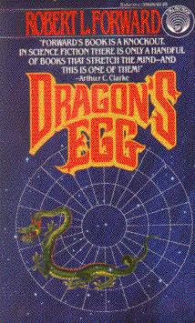

Dragon's Eggby Robert L. Forward
publisher: Del Rey
Fiction, 308 pages | 
(book cover art, Copyright ©1980 Darrel K. Sweet)
Used with Permission. |
Return to the Book MenuPrevious|Next
Description:
A story of our encounter with life on a neutron star, where
the magnetic fields are intense, the gravity is crushing, and reactions
happen a million times faster than in the rest of the universe. A culture
evolves before our very eyes; how can we communicate with it?
Recommended for: fiction lovers, anthropologists, physicists,
astronomers.
Did-you-read questions:
Deadline: February 1, 2005.
These should be easy questions, but you should have the questions ready and keep an eye out during your reading. Each question should be answered with 1-2 sentences.
Note: these questions are not probably not the most important part of the book! Your essay will not have to cover these questions!
- What things are hanging out inside Earth's sun?
- What is the cheela's name for Earth's sun?
- What was God's-Chosen's birth name?
- What happens when cheela "sleep"?
- What did the cheela do to Amalita without asking?
Report Questions:Deadline: Peer Review Session on February 8, 2005; paper due February 10, 2005.
You should write a 3 - 4 page essay on one of the following questions. Your essay should include examples and references to the book, unless otherwise specified. Page number references are sufficient for citing material from the primary book. If you use outside materials, cite your sources in full. If you would rather write on a different topic, you may, but clear it with Mr. Howe or Ms. Sullivan first.
- What were the most vivid similarities and differences you saw between life
on Dragon's Egg and life on Earth? Go beyond the physically obvious, such
as 'high gravity' or 'fast life.' How do living on these two bodies compare
and differ?
- In order for this adventure to happen, some new technologies had
to be used that are on the fringes of today's science. What were some of
them, and how far-fetched do you think they are?
- Cheela and human's historical progress seem remarkably similar. Do you
think that this is reasonable? What do you think would have happened to
the cheela if humans had not made contact?
- When the Cheela send information back to the humans, some of it is encoded.
Do you think that this is a good idea? Do you think the humans would be
likely to try to crack the code ahead of time?
Graphic and Presentation:
Deadline: February 21 - March 3, 2005.You will give a 10 minute presentation on both of the following:
- Convince your peers that they should (or should not) read this book. (This may include a brief summary of the book.) Give examples of what was cool or worthwhile in the book, and what you got out of it (or didn't).
- Describe a (realistic) science idea that you learned about in this book, citing information from at least 2 external sources (other than the dictionary). If you would like help choosing or understanding an idea from your book, you are invited to come talk to Mr. Howe or Ms. Sullivan.
Note: This presentation should not be just a reading of your paper!Along with this presentation, you should have a graphic that will go with it. A Power Point presentation is recommended, but if you have a special idea for a something else, such as a model, an original video presentation, or a well done drawing/ painting/ sculpture/ etc., you may do so, provided it involves a similar level of effort and polish. Speak to Mr. Howe or Ms. Sullivan first if you are considering an alternate graphic format to the Power Point.
Return to the Book MenuPrevious|Next